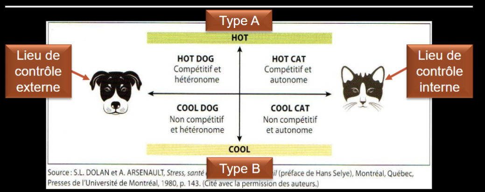

Types de personnalité et lieu de contrôle
Table des matières
L'essentiel : Les caractéristiques individuelles modulent la réponse au stress, sans la causer. Deux concepts utiles : les types de personnalité (A, B, C, D, hardiness) et le lieu de contrôle (interne ou externe). Comprendre ces variables aide à individualiser le soutien, mais ne déresponsabilise jamais l'employeur des conditions de travail.
Pourquoi en parler
Les facteurs individuels expliquent une partie de la variabilité des réponses au stress. Ils sont des modulateurs, pas des causes. Connaître ces concepts permet
- D'individualiser le soutien (formation, coaching, retour au travail)
- D'éviter de présumer qu'un travailleur résilient n'est pas à risque
- De recadrer la conversation : c'est le contexte qui produit le risque, l'individu qui le filtre
Erreur à éviter : utiliser ces concepts pour justifier l'absence d'action sur les conditions de travail. Aucun trait de personnalité ne protège indéfiniment contre un environnement dégradé.
Types de personnalité
Typologie de Friedman et Rosenman (1959), enrichie par d'autres auteurs, synthétisée dans Dolan & Arsenault 2009 p. 169
| Type | Caractéristiques | Lien avec stress et santé |
|---|---|---|
| Type A | Compétitif, pressé, impatient, hostile | Risque accru de maladies cardiovasculaires (controversé selon études récentes) |
| Type B | Détendu, patient, peu compétitif | Moins de risques cardiovasculaires |
| Type C | Coopératif, soumis, refoule les émotions | Lien étudié avec certains cancers (controversé) |
| Type D (Denollet) | Affectivité négative + inhibition sociale | Risque cardiovasculaire confirmé par études récentes |
| Hardiness (Kobasa) | Engagement, contrôle, défi | Facteur de protection contre les conséquences du stress |
Note : la typologie A/B est controversée dans la recherche moderne. Les concepts de type D et de hardiness sont mieux étayés.
Lieu de contrôle
Concept de Rotter (1966) : tendance à attribuer ce qui nous arrive à des causes internes (« je contrôle ce qui m'arrive ») ou externes (« ce qui m'arrive dépend du hasard ou des autres »).
| Lieu de contrôle | Tendance | Lien avec stress |
|---|---|---|
| Interne | « Je peux agir sur ma situation » | Meilleure capacité de coping actif |
| Externe | « Ce qui m'arrive dépend des autres ou du hasard » | Sentiment d'impuissance, coping passif |
Nuance importante : un lieu de contrôle externe n'est pas un défaut. Quand l'environnement de travail offre objectivement peu de contrôle (ce qui est fréquent dans certains postes miniers), une attribution externe est réaliste et adaptative.

Toucher l'image pour l'agrandirCombinaison type de personnalité (A, B) × lieu de contrôle (interne, externe) : matrice HOT DOG / COOL DOG / HOT CAT / COOL CAT. Source : Dolan & Arsenault (1980), repris dans SST1010 (UQAM), séance 4. Usage personnel.
Application en mines
Comment utiliser ces concepts en milieu minier
| Situation | Action recommandée |
|---|---|
| Travailleur qui « tient toujours le coup » | Ne pas présumer qu'il est protégé. Surveiller les signaux d'épuisement à long terme. |
| Travailleur démotivé attribuant tout au système | Vérifier si l'attribution est réaliste avant de chercher à la modifier. Souvent l'environnement le justifie. |
| Plan de retour au travail | Adapter au profil individuel (rythme, soutien, autonomie progressive) |
| Formation des superviseurs | Inclure une compréhension de la variabilité individuelle |
Risque à éviter en mine : la culture du « tough guy » valorise les traits de personnalité « résistants » au point de stigmatiser ceux qui montrent des signaux de stress. Cela retarde la détection et l'intervention.
Limites à respecter
- Sélection à l'embauche basée sur la personnalité : illégal et inefficace pour la santé psychologique.
- Justifier l'inaction organisationnelle par le profil individuel (« il est juste pas fait pour ce poste »).
- Étiqueter les travailleurs par leur type de personnalité dans les dossiers ou conversations.
Les caractéristiques individuelles s'inscrivent dans une interaction avec l'environnement. Aucun travailleur n'est à risque ou protégé en soi.
Documents et outils
| Document | Type | Source |
|---|---|---|
| Notes de cours SST1010, modules 3 et 4 | Synthèse | UQAM |
| Dolan 2009 Stress, estime de soi, santé et travail.pdf | Livre | PUQ |
| Échelle de hardiness (PVS-III) | Instrument académique | Bartone |
| Échelle de lieu de contrôle (Rotter) | Instrument | Bibliographies psychométrie |
Voir le centre de ressources : 📁 Documents et outils.
Pour aller plus loin
Références
- Friedman, M. & Rosenman, R. H. (1959). Association of specific overt behavior pattern with blood and cardiovascular findings. JAMA, 169(12), 1286-1296.
- Kobasa, S. C. (1979). Stressful life events, personality, and health, an inquiry into hardiness. *Journal of Personality and Social P
Pages qui pointent ici (4)
- 🔤 Index alphabétique des articles SST psychosociale
- 🖼️ Index des images du cours SST1010 SST psychosociale
- Modèles et Théories SST psychosociale
- Modèles et Théories SST psychosociale